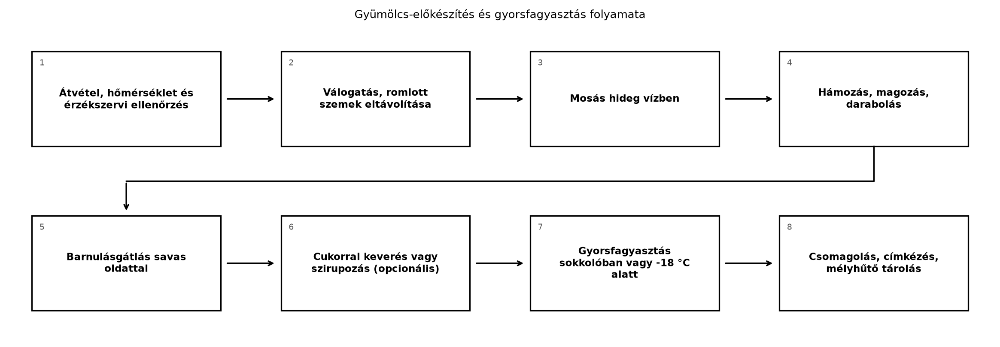

Nyár elején a cukrászüzem egyszerre kap nagy tétel epret, málnát, meggyet és sárgabarackot. A friss gyümölcs néhány nap alatt megpuhul, erjedni kezd, a vágott felület megbarnul, a vendég számára pedig már nem eladható. Ugyanez a gyümölcs azonban értékes alapanyag a téli tortákhoz, pohárkrémekhez, fagylaltöntethez és tányérdesszertekhez, ha a cukrász az átvétel után azonnal előkészíti, gyorsfagyasztja vagy vízelvonással tartósítja. Ebben az alfejezetben a gyümölcs-előkészítés, a gyorsfagyasztás és az aszalás/szárítás alapjait tanulod meg. A cél nem az, hogy „megmentsük” a már romlott gyümölcsöt, hanem hogy a kifogástalan alapanyag minőségét megőrizzük a későbbi felhasználásig.
A friss gyümölcs a cukrászatban akkor hasznosul jól, ha a válogatástól a tárolásig minden lépés a romlás lassítását és a minőségmegőrzést szolgálja. Az alábbi folyamatábra a gyümölcs-előkészítés és gyorsfagyasztás tipikus sorrendjét mutatja.

A folyamat lépéseit a következő részekben részletesen is bemutatjuk; az ábra nélkül is követhető a leírás.
Definíció. Gyümölcs-előkészítés. A gyümölcs-előkészítés az átvett nyers gyümölcs tisztítását, válogatását, hámozását, magozását, darabolását és – ahol szükséges – barnulásgátló, hőkezelő vagy cukrozó kezelését jelenti. Célja a további feldolgozásra alkalmas, szennyezéstől és hibás szemektől mentes, egyenletes darabméretű alapanyag előállítása.
Definíció. Gyorsfagyasztás. A gyorsfagyasztás olyan tartósítás, amely során az élelmiszert nagyon rövid idő alatt, lehetőleg alatti levegővel vagy érintkező felülettel maghőmérséklet alá hűtjük. A gyors fagyasztás apró jégkristályokat képez, ezért a sejtek kevésbé roncsolódnak, a gyümölcs felengedés után kevésbé ereszt levet, és jobban megőrzi színét, illatát. Az IQF (individually quick frozen, azaz egyenként gyorsfagyasztott) eljárásban a gyümölcsdarabok nem tapadnak össze, hanem fagyasztva is szétválaszthatók maradnak. A cukrászatban ez különösen előnyös, mert pontosan kimérhető, kis adag vehető ki a csomagból.
Definíció. Vízelvonás. A vízelvonás olyan tartósítás, amelyben az élelmiszer vizének nagy részét eltávolítjuk, így a vízaktivitás () csökken. A mikroorganizmusok – különösen a penészek és élesztők – szaporodásához szabad vízre van szükség, ezért az alacsony vízaktivitású termék hűtés nélkül is tovább eltartható. A cukrászatban a vízelvonás leggyakoribb formái az aszalás/szárítás és a kandírozás.
Szabály. Barnulásgátlás. Az alma, körte, banán és más világos húsú gyümölcs vágott felülete a polifenol-oxidáz enzim hatására megbarnul. A barnulást savas kezeléssel gátoljuk: citromlé, citromsavoldat vagy aszkorbinsav-oldat csökkenti a felület pH-ját, és lassítja az enzim működését. A hőkezelés (blansírozás) is gátolja az enzimet, de megváltoztatja az állagot, ezért gyorsfagyasztás előtt csak akkor alkalmazzuk, ha a receptúra ezt kifejezetten előírja. Az enzimes barnulás és a pektin–sav–cukor összefüggés részleteit a Hazai és déli gyümölcsök, szárított gyümölcsök alfejezetben tanultad.
Higiénia. A gyümölcs felületén föld, por, penészspóra és növényvédőszer-maradvány lehet. A bogyókat hideg, folyó ivóvízben, dörzsölés nélkül, rövid ideig mossuk, hogy ne sérüljenek; a szamócát a csésze eltávolítása előtt mossuk, mert különben vizet szív. A romlott, penészes szemeket már a mosás előtt eltávolítjuk, mert a vízben szétterjednének, és a penésztoxinokat nem távolítja el a fagyasztás. A friss gyümölcsöt a hűtőlánc megszakítása nélkül, a feldolgozásig hűtőben tároljuk; a vágott gyümölcsöt azonnal fel kell dolgozni vagy hűtve tartani.
A gyümölcsöt először átválogatjuk. Eltávolítjuk a penészes, erjedt, erősen sérült, idegen anyagot tartalmazó szemeket. A szamócát, málnát, ribiszkét óvatosan, kis tételekben mossuk, majd szitán vagy tiszta textílián csöpögtetjük le. A csonthéjasokat (meggy, cseresznye, kajszi, szilva) mosás után magozzuk. A meggy és cseresznye magozása után a léveszteséget minimalizálni kell, mert a sérült felületen enzimek és mikrobák indulnak el. A nagyobb gyümölcsöket (alma, körte, birs) hámozzuk, magházat eltávolítjuk, majd egyenletes kockákra, cikkekre vagy szeletekre vágjuk. Az egyenletes méret azért fontos, mert a fagyasztás és az aszalás sebessége is függ a darab vastagságától. A túl vastag darabok közepén a fagyasztás lassú, a túl vékonyak kiszáradnak.
Továbbvitt eredmény. Az itt megismert válogatási, mosási és darabolási követelményeket használjuk a Hőkezelés, vastagcukorban és alkoholban tartósítás alfejezetben, ahol a gyümölcsöt lekvárrá, vastagcukorban tartósított betétté vagy alkoholos gyümölccsé dolgozzuk fel. A fagyasztott gyümölcspüré gyümölcstöltelékek, fagylaltöntetek és tányérdesszertek alapja lehet.
A hámozott és vágott almát, körtét, birsalmát, banánt azonnal savas oldatba merítjük. Egy háztartási méretű, jól mérhető oldat például:
Technológiai lap. Barnulásgátló citromsavas oldat.
A savas oldat csak lassítja a barnulást, nem tartósít hosszú távon, ezért a kezelt gyümölcsöt hűtve vagy feldolgozva kell tartani. A citromsav élelmiszer-adalékanyagként is szabályozott; a késztermékben csak a technológiailag szükséges mennyiségben lehet jelen (ellenőrizendő: 1333/2008/EK rendelet adalékanyag-szabályai).
A fagyasztandó gyümölcsöt gyakran – cukorral rétegezzük, vagy híg cukorsziruppal öntjük le. A cukor több célt szolgál: megköti a vizet, csökkenti a fagyasztás alatti jégkristály-növekedést, védi a színt és a textúrát, valamint édes ízt ad. A cukorral kevert gyümölcsöt adagolt, lapos csomagokban fagyasztjuk, így a felhasználáskor könnyű kitörni a szükséges mennyiséget. A cukor mennyiségét a végső receptúra szárazanyag-tartalma és édesítőszükséglete szerint kell beállítani; a fagylaltkeverék-számításnál ez később visszatér.
A gyorsfagyasztás üzemi körülmények között sokkoló fagyasztóban, alatti légáramban vagy fagyasztólemezen történik (ellenőrizendő: gyártói adatlap és NÉBIH-útmutató). A cukrászüzemben a gyümölcsöt vékony rétegben, lehetőleg egymástól elkülönítve terítjük el, hogy az IQF-elv érvényesüljön. A háztartási gyakorlatban a mélyhűtőben alatt, lapos csomagokban fagyasztunk; a gyorsaságot az adag csökkentésével javíthatjuk. A fagyasztás alatt a víz jégkristályokká alakul; minél gyorsabb a fagyás, annál több apró kristály keletkezik, és annál kisebb a sejtek roncsolódása. A lassú fagyás nagy, éles jégkristályokat hoz létre, a gyümölcs felengedés után petyhüdt, leves lesz.
A helyes és a hibás eljárást az ábra két sora veti össze: felül a leszárított gyümölcs egy rétegben, elválasztva fagy elő, majd címkézett csomagba kerül, és felengedve is ép marad; alul a nedves gyümölcs zacskóban egy tömbbe, lassan fagy, és kiolvasztva levet ereszt.
Tilos. A már felolvadt, kiolvadt gyümölcsöt visszafagyasztani tilos. A hőmérséklet-ingadozás közben a kristályok összeolvadnak, a mikrobák szaporodásnak indulnak, és a termék érzékszervi és biztonsági minősége romlik. A kiolvadt gyümölcsöt azonnal fel kell dolgozni, vagy legfeljebb hűtve, a receptúra szerint rövid ideig tárolni.
Megjegyzés. Felengedés. A fagyasztott gyümölcsöt lehetőleg hűtőszekrényben, – között, zárt edényben olvasztjuk fel. Gyors felengedéshez csak akkor használjunk mikrohullámot, ha a technológia kifejezetten megengedi, mert az egyenetlen melegítés roncsolja az állagot. A fagyasztott bogyós gyümölcsöt süteményekbe, krémekbe sokszor fagyasztva is be lehet keverni, ha a receptúra szerint elég a hőhatás.
Higiénia. A fagyasztott bogyós gyümölcs (málna, szeder, eper, áfonya) vírusokat (norovírus, hepatitis A) hordozhat, amelyeket a fagyasztás nem pusztít el. Hőkezelés nélküli termékbe (tányérdesszert, öntet, pohárkrém) csak megbízható, saját előkészítésű vagy a beszállító által igazolt tételt használjunk, ellenkező esetben a gyümölcsöt felhasználás előtt forraljuk fel (ellenőrizendő: NÉBIH-ajánlás a fagyasztott bogyós gyümölcsökre).
Az aszalás a gyümölcs vizének elpárologtatása alacsony hőmérsékleten, általában – közötti légáramban (ellenőrizendő: gyümölcsfajtól és aszalóberendezéstől függően). A napon aszalás hagyományos, de higiéniai és egyenletességi szempontból kevésbé szabályozható, ezért üzemben légkeveréses szárító- vagy aszalókészüléket használunk. Az alma, körte, meggy, szilva, sárgabarack aszalása előtt a gyümölcsöt mossuk, magozzuk, daraboljuk, és a színvédelemre cukrászüzemben a citromsavas vagy aszkorbinsavas előkezelést használjuk. A kénezés (kén-dioxid) mérgező, nyálkahártya-irritáló gázt fejleszt (asztmásoknál súlyos roham is lehet), adalékanyagként engedélyhez és határértékhez kötött (ellenőrizendő: 1333/2008/EK), ezért cukrászüzemben, tanulónál nem javasolt. A beszerzett kénezett aszalványt 10 mg/kg (SO₂-ben kifejezett) koncentráció felett allergénként jelölni kell (ellenőrizendő: 1169/2011/EU II. melléklet; lásd még Kémiai szennyezők és technológiai eredetű szennyezők).
Figyelem. A kén égetésével végzett kénezés mérgező kén-dioxid gázt fejleszt; csak erre alkalmas, szellőztetett helyen, védőeszközzel, szakember által végezhető, a tanműhelyi gyakorlatban nem alkalmazzuk. A szárítás akkor kész, ha a gyümölcs rugalmas, nem ragad, de nem is törik porrá; a maradék víztartalom jellemzően – közötti (ellenőrizendő: termékcsoport-specifikus előírás).
Szabály. Vízaktivitás és tartósság. Az aszalás a vízaktivitást – alá csökkentheti, ami a penész- és élesztőszaporodást erősen lassítja. A száraz gyümölcsöt viszont fénytől, levegőtől és nedvességfelvételtől védve kell csomagolni, mert a visszanedvesedett felületen újra penész jelenhet meg. A szárított gyümölcsöket gyakran hűtve tároljuk, különösen hosszabb eltarthatóság esetén (ellenőrizendő: hatályos útmutató).
A kandírozás vízelvonás cukoroldattal. A gyümölcsdarabot fokozatosan növekvő koncentrációjú cukorszirupban áztatják, így a sejtekből a víz ozmózissal kilép, és cukor lép a helyébe. Az eredmény szilárd, hosszan eltartható, fényes vagy porcukorral behintett gyümölcsbetét, amelyet gyümölcskenyérbe, teasüteménybe, bonbonba használunk. A részletes technológiát a Hőkezelés, vastagcukorban és alkoholban tartósítás alfejezet tárgyalja.
A gyümölcs-tartósítás során két alapvető számítást kell ismerned: a tisztítási veszteség levonását és a vízelvonás utáni tömeg kiszámítását szárazanyag-mérleggel.
Számítás 1. Egy cukrász szamócát vett át. A válogatás és csumázás vesztesége , a mosás és csöpögtetés tömegcsökkenése . Mennyi az előkészített, fagyasztásra alkalmas nettó gyümölcs tömege?
Adott: , veszteség , . Keresett: .
Képlet: .
Behelyettesítés: .
Eredmény gyakorlati kerekítéssel: . Ellenőrzés: ha a bruttóból levonjuk a veszteséget, a visszaszámolt tömeg , a kerekítésnek nincs technológiai jelentősége alatt.
Számítás 2. hámozott almát aszalunk. Az alma friss víztartalma , az aszalás utáni maradék víztartalom . Mennyi lesz az aszalt alma tömege, ha a szárazanyag-tartalom nem csökken?
Adott: , , . Keresett: .
Először a szárazanyag tömege: .
Képlet: .
Eredmény: aszalt alma. Ellenőrzés: a veszteség víz, ami reális.
Jogszabály. A gyümölcs feldolgozása során a 852/2004/EK rendelet (élelmiszer-higiénia) szerint a vállalkozásnak biztosítania kell a nyersanyagok biztonságos kezelését, a hűtési lánc fenntartását és a késztermék szennyeződésének megelőzését. A fagyasztott gyümölcsöket a 2073/2005/EK rendelet mikrobiológiai kritériumai hatálya alá tartozó termékkörben kell vizsgálni, ha a termék jellege ezt megköveteli (ellenőrizendő: pontos termékkör és határérték). A csomagolt fagyasztott gyümölcs fogyasztói tájékoztatóján a 1169/2011/EU rendelet szerint meg kell adni a termék nevét, összetevőit, a nettó mennyiséget, a fagyasztott állapot jelölését és a szükséges tárolási hőmérsékletet. Ha a gyümölcsöt szulfittal kezelték, a kén-dioxid a 14 jelölendő allergéncsoport egyike, ezért jelölni kell. A fagyasztott termékben használt adalékanyagokra a 1333/2008/EK rendelet vonatkozik.
Higiénia. A gyümölcs-előkészítő helyiségben a nyers gyümölcs és a kész, fagyasztott termék nem érintkezhet. A munkafelületeket, edényeket, mérlegeket az előkészítés közben is tisztán kell tartani, a levet azonnal fel kell törölni, mert a cukros, nedves felület mikroorganizmus- és kártevőcsalogató. A személyi higiénia a megszokott munkakezdés szerint kötelező: munkaruha, hajháló, ékszer le, kézmosás, tiszta edény és felület.
Cél: előkészített, cukorral kevert gyorsfagyasztott szamóca készítése, a fagyasztás és a felengedés minőségi ellenőrzése.
Eszközök és anyagok: digitális konyhai mérleg, vágódeszka, éles kés, szűrő, nagy keverőtál, lapos fedeles fagyasztóedény vagy tasak, citromlé, kristálycukor, friss, érett, de nem túlérett szamóca, hűtőszekrény, mélyhűtő.
Higiéniai munkakezdés. Tiszta munkaruhát veszel, hajadat hajhálóval rögzíted, ékszert leveszed, kezet mosol, a munkafelületet, vágódeszkát, kést és edényeket tisztítod. Ellenőrzöd a szamóca színét, szagát, penészmentességét. A mérleget tiszta tálzacskóval vagy sütőpapírral béleled.
Biztonsági korlát. A fagyasztóval végzett művelet tanműhelyi vagy üzemi környezetben, oktatás után és felügyelet mellett végezhető; otthon háztartási géppel, kis adagban gyakorolj. A mélyhűtőből kivett fémtálca hideg felülete fagyási sérülést okozhat, ezért csak száraz kézzel, textilkesztyűvel vagy kendővel fogd meg. A penészes, erjedt gyümölcsöt ne kóstold meg.
Technológiai lap.
Termék neve, termékcsoport, alapmennyiség: cukorral kevert gyorsfagyasztott szamóca, gyorsfagyasztott gyümölcs félkész termék, keverék.
Anyaghányad táblázat:
| Nyersanyag | Mennyiség (g) | Megjegyzés |
|---|---|---|
| Szamóca, tisztítva | 1 000 | ép, érett, csumázott |
| Kristálycukor | 200 | finomszemcsés |
| Citromlé | 20 | frissen szűrt |
| Összes tömeg | 1 220 | fagyasztás előtt |
Eszközök és gépek: kés, vágódeszka, szűrő, keverőtál, fagyasztóedény, mélyhűtő.
Műveleti sorrend:
Kritikus pontok és technológiai kulcspontok: A hűtési lánc megszakítása CCP lehet: a gyümölcs a válogatástól a fagyasztásig ne álljon szobahőmérsékleten hosszabb ideig, a hűtőtárolás – legyen. A kész fagyasztott termék maghőmérséklete alatt maradjon, a hőmérsékletet naponta ellenőrizni kell. A sérült vagy romlott gyümölcsöt az előkészítés előtt eltávolítjuk.
Allergének: A 14 jelölendő csoportból egyik sem, ha a felhasznált alapanyagok tiszta szamóca, cukor és citromlé. Keresztszennyezettség esetén (például olajos magvas vagy szójás termékek melletti tárolás) a csomagoláson fel kell tüntetni a lehetséges allergént.
Minőségi jellemzők: fagyasztva a gyümölcsdarabok elkülönülnek, a cukor nem csomósodik, a termék színe élénk, illata friss gyümölcsre emlékeztet, nincs jégvirág vagy fagyás okozta fakó folt. Felengedés után a gyümölcs kissé puha, de nem szétfőtt, leve mérsékelt, íze édes-savanyú.
Tárolás, eltarthatóság, tálalás: alatt, zárt csomagolásban tárold (ellenőrizendő: hatályos útmutató szerinti idő, gyakorlatban 6–12 hónap). Felhasználás előtt hűtőben olvaszd fel, vagy a receptúra szerint fagyasztva adagold. A kiolvadt keveréket ne fagyaszd vissza.
A gyakorlati feladat során a tanuló töltsön ki technológiai naplót: mérje fel a gyümölcs kezdeti hőmérsékletét, a fagyasztó hőmérsékletét, a fagyasztási időt, és jegyezze fel a felengedés során keletkezett levet. A kész terméket érzékszervi pontozással értékeli.
A gyorsfagyasztott gyümölcs minőségét fagyasztott állapotban és felengedés után egyaránt értékeljük. Fagyasztva vizsgáljuk a darabok elkülönülését, a jégkristályok nagyságát, a fagyási foltokat, a csomagolás záródását és a címke adatait. Felengedés után ellenőrizzük a gyümölcs színét, illatát, állagát, a keletkezett lé mennyiségét, ízét és idegen anyagtól való mentességét. Az aszalt gyümölcsnél a rugalmasságot, a víztartalmat, a színt és a penészmentességet kell ellenőrizni. A tömegellenőrzésnél a csomagolt fagyasztott gyümölcs nettó tömege nem lehet kevesebb a jelölt nettó mennyiségnél; a mérést szobahőmérsékletű mérlegen, a fagyasztott termék lecsapódott jég nélküli burkolattal történik.
| Hiba | Ok | Megelőzés/javítás |
|---|---|---|
| Felengedés után a gyümölcs petyhüdt, sok levet enged | Lassú fagyasztás, nagy jégkristályok | Vékony rétegben, hidegebb fagyasztóban, IQF módszerrel fagyassz |
| A vágott alma megbarnul | Polifenol-oxidáz enzim aktivitása | Savas citromos oldatba merítés, azonnali feldolgozás |
| A fagyasztott gyümölcs egy tömbbé fagy | Vastag rétegben fagyasztották, nem mozgatták | Tálcán előfagyasztás, lapos csomagolás |
| Az aszalt gyümölcs penészes lesz | Túl magas maradék víztartalom, rossz csomagolás | Alacsonyabb víztartalomig szárítás, párazáró csomagolás, hűtött tárolás |
| A fagyasztott gyümölcsön jégvirág, fagyási folt van | Hőmérséklet-ingadozás, hosszú tárolás | Stabil alatti tárolás, gyors felhasználás |
Tilos. A romlott, erjedt gyümölcsöt „megmenteni” fagyasztással, aszalással vagy cukorral keveréssel tilos. A penésztoxinok és a már elszaporodott mikrobák utólag nem távolíthatók el biztonságosan.
Egy cukrászüzemben péntek délután friss málnát szállítanak, de a hétvégi forgalom már nem tudja felhasználni. A cukrász az átvétel után leméri a hőmérsékletet, és a gyümölcsöt azonnal hűtőbe teszi. Szombat reggel a málna egy részét a friss pultba készíti, a többit gyorsfagyasztja. A válogatás során kiderül, hogy a gyümölcs -a penészes vagy sérült; ezt a hányadot külön hulladékzsákba teszi, és a tömegnaplóban rögzíti. A megmaradt málnát hideg vízben leöblíti, lecsepegteti, majd kristálycukorral rétegezve lapos, fagyasztóedénybe teríti. A tálcát sokkolóba teszi. Két óra múlva a gyümölcs maghőmérséklete eléri a -ot; a cukrász ezt a hőmérsékletnaplóba beírja, a tételt lezárja, címkézi, és a mélyhűtőbe helyezi. A hétfői nyitásnál az ellenőrzés azt mutatja, hogy a darabok szétválaszthatók, a szín és az illat megmaradt. A fagyasztott málnából később, a vírusveszély miatt felforralt, hőkezelt málnapüréből készítenek tányérdesszertet és fagylaltöntetet.
1. feladat (A). Sorold fel a gyümölcs-előkészítés lépéseit az átvételtől a gyorsfagyasztásig.
2. feladat (A). Mi a különbség a lassú és a gyors fagyasztás között a gyümölcs minősége szempontjából?
3. feladat (B). hámozott, magozott őszibarackot készítenek elő fagyasztásra. A hámozás és magozás vesztesége , a lecsöpögtetés további tömegcsökkenést okoz. Mennyi fagyasztható barackot kapnak?
4. feladat (B). friss meggyet aszalsz. A friss meggy víztartalma , az aszalás utáni víztartalom . Mennyi lesz az aszalt meggy tömege?
5. feladat (C). Egy recept szerint fagyasztott eper helyett friss epret szeretnél használni. Tudod, hogy a fagyasztott eper előkészítési vesztesége volt, és a fagyasztás után a tömege ugyanannyi, mint a friss előkészített tömeg. Mennyi friss, tisztítatlan epret kell venned ahhoz, hogy fagyasztott epret kapj? Magyarázd el a gondolatmeneted.
6. feladat (D). Készítsd el a gyakorlati útmutató szerint a cukorral kevert gyorsfagyasztott szamócát, és értékeld a felengedett mintát a minőségellenőrzés szempontjai szerint. Tölts ki technológiai naplót.
Önellenőrzés – válaszok
1. feladat (A) megoldása. Az átvétel és ellenőrzés után válogatás, mosás, hámozás/magozás, darabolás, barnulásgátlás, opcionális cukrozás, majd gyorsfagyasztás következik.
2. feladat (A) megoldása. A lassú fagyasztás nagy jégkristályokat hoz létre, a gyümölcs felengedve petyhüdt lesz. A gyors fagyasztás apró kristályokat képez, kevésbé roncsolja a sejteket, így jobb a gyümölcs állaga és kevesebb levet ereszt.
3. feladat (B) megoldása. . Gyakorlatilag .
4. feladat (B) megoldása. Szárazanyag: . Aszalt tömeg: . Tehát aszalt meggy.
5. feladat (C) megoldása. Ha a fagyasztott eper tömege egyenlő az előkészített friss tömeggel, akkor előkészített epret kell kapnod. Az előkészítési veszteség , vagyis az előkészített tömeg a tisztítatlan tömeg -a. Tehát . Ellenőrzés: .
6. feladat (D) megoldása – értékelési szempontok. A tanuló akkor teljesít, ha a gyümölcs előkészítése során betartotta a higiéniai munkakezdést, a válogatást, a citromlé és cukor hozzákeverését, a lapos edényben történő fagyasztást, a címkézést. A felengedett mintánál ellenőrzi a színt, az illatot, az állagot, a leves tömegét és az ízt. A naplóban szerepel a kezdeti hőmérséklet, a fagyasztó hőmérséklete, a fagyasztási idő és a felengedési megfigyelés.
A gyümölcs-előkészítés során a friss gyümölcsöt válogatjuk, mossuk, hámozzuk, magozzuk és daraboljuk. A barnulást savas kezeléssel gátoljuk, mert a vágott felületen a polifenol-oxidáz enzim elszíneződést okoz. A gyorsfagyasztás lényege a nagyon gyors hőelvonás: a alatti maghőmérsékletet minél rövidebb idő alatt kell elérni, hogy apró jégkristályok keletkezzenek. Az IQF-elv szerint a darabok egyenként fagyasztva nem tapadnak össze. A cukorral keverés védi a szerkezetet. A vízelvonás aszalással vagy szárítással a vízaktivitást csökkenti, így lassítja a romlást; a kandírozás cukoroldattal vonja el a vizet. A fagyasztott, kiolvadt gyümölcsöt visszafagyasztani tilos. Továbbvitt eredmény. Az itt megtanult előkészítési és tartósítási elvek a Hőkezelés, vastagcukorban és alkoholban tartósítás alfejezetben gyümölcstöltelékek, befőttek, vastagcukorban tartósított betétek és alkoholos gyümölcsök készítésében térnek vissza.
A szöveg az alábbi forrástípusokra támaszkodik, de azokat a kiadás előtt célzottan ellenőrizni kell:
Ellenőrizendő még a gyümölcsök optimális fagyasztási hőmérséklete, az aszalás hőfok-idő kombinációi, a maradék víztartalom határértékei, a szulfitos kezelés jelölési kötelezettségei, valamint a fagyasztott gyümölcsök eltarthatósági időajánlásai. A megadott hőmérsékletek és százalékok tanulási példák, nem hatósági előírások.